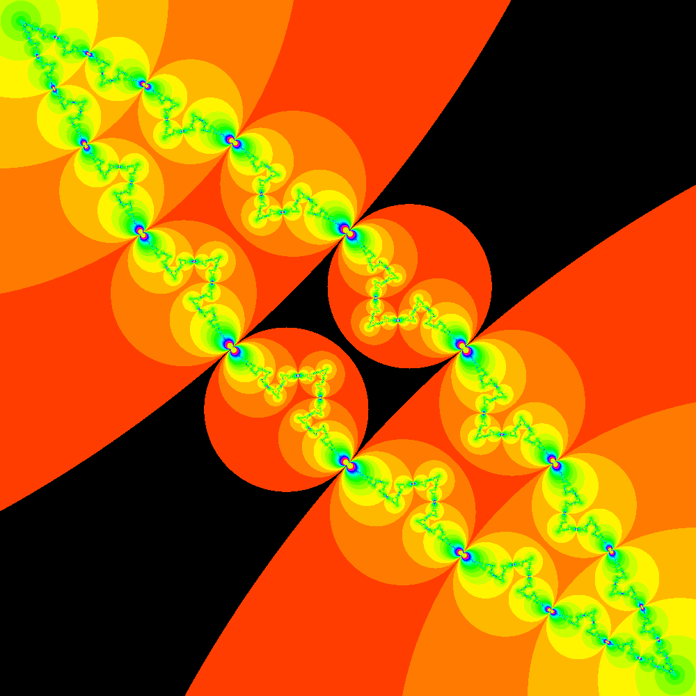
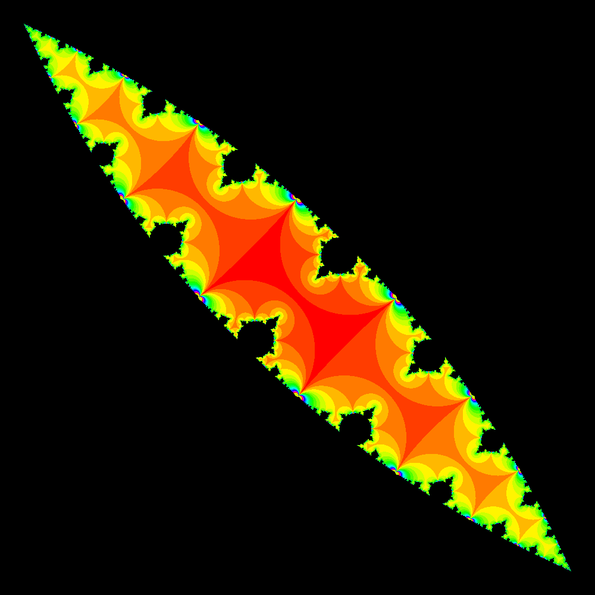
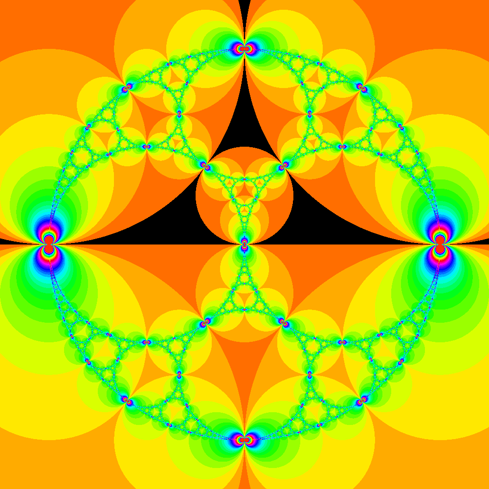
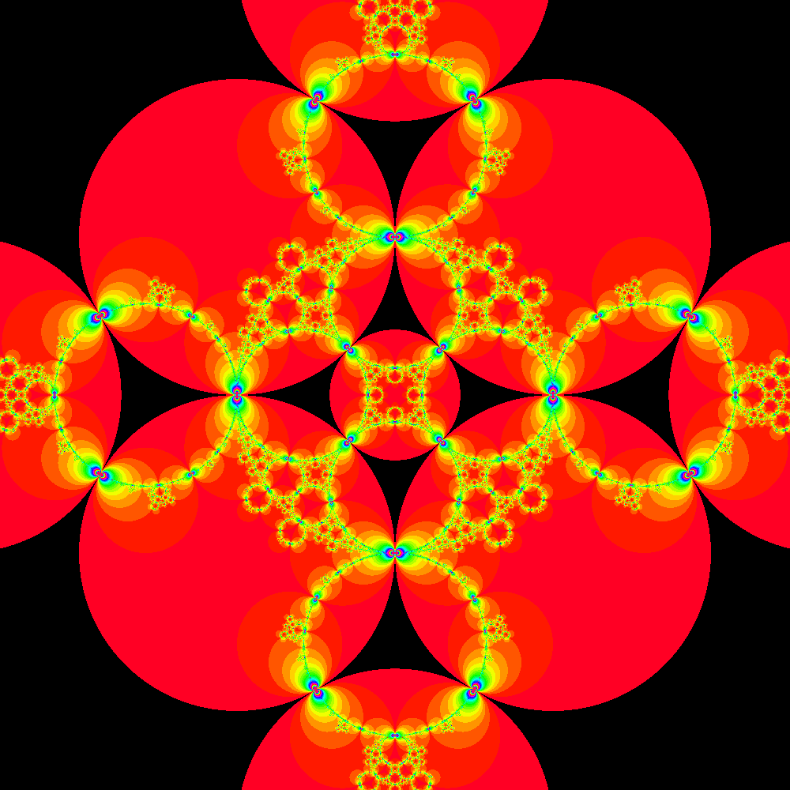
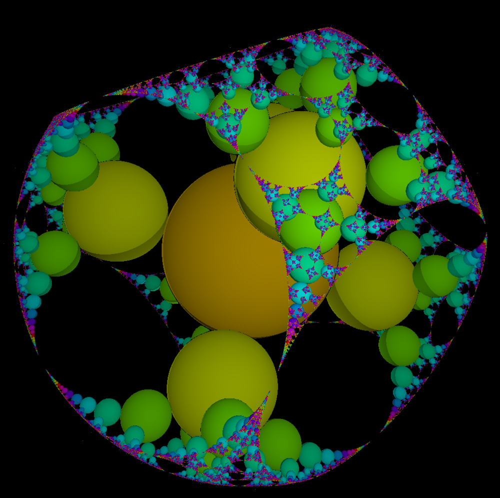
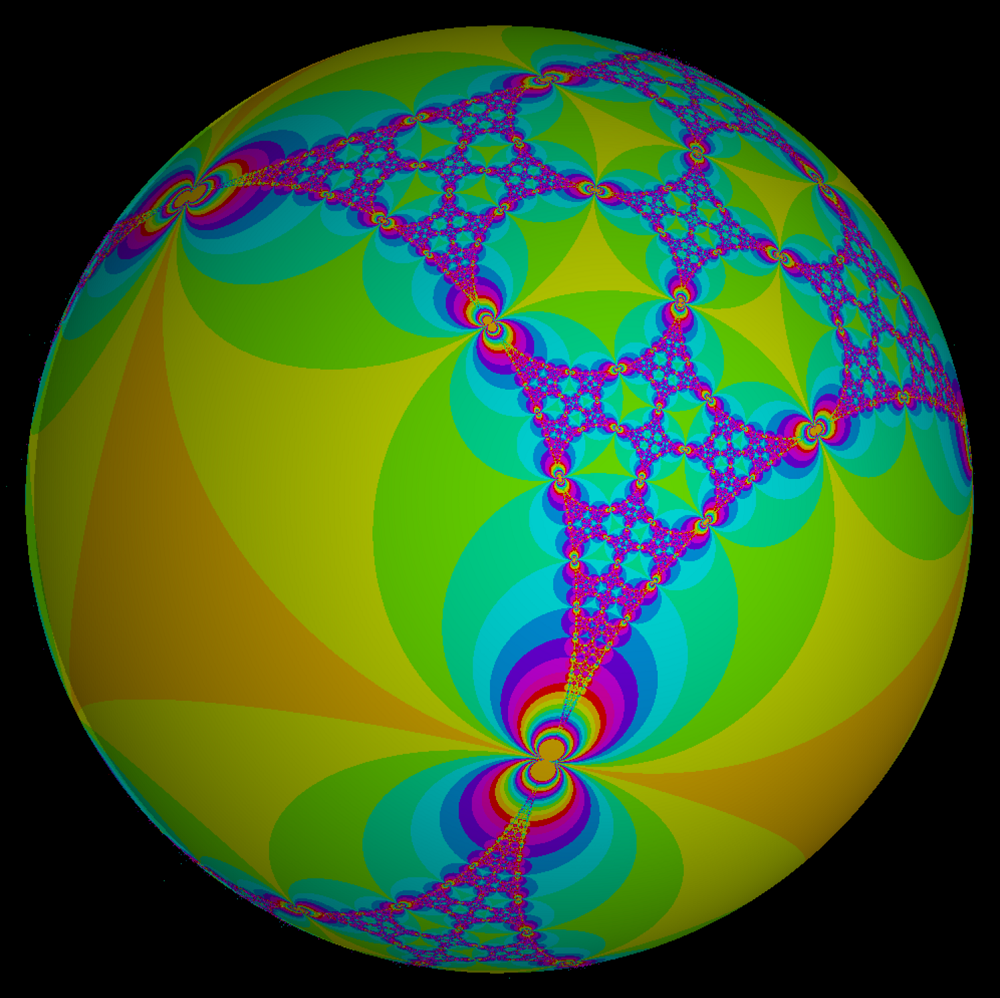
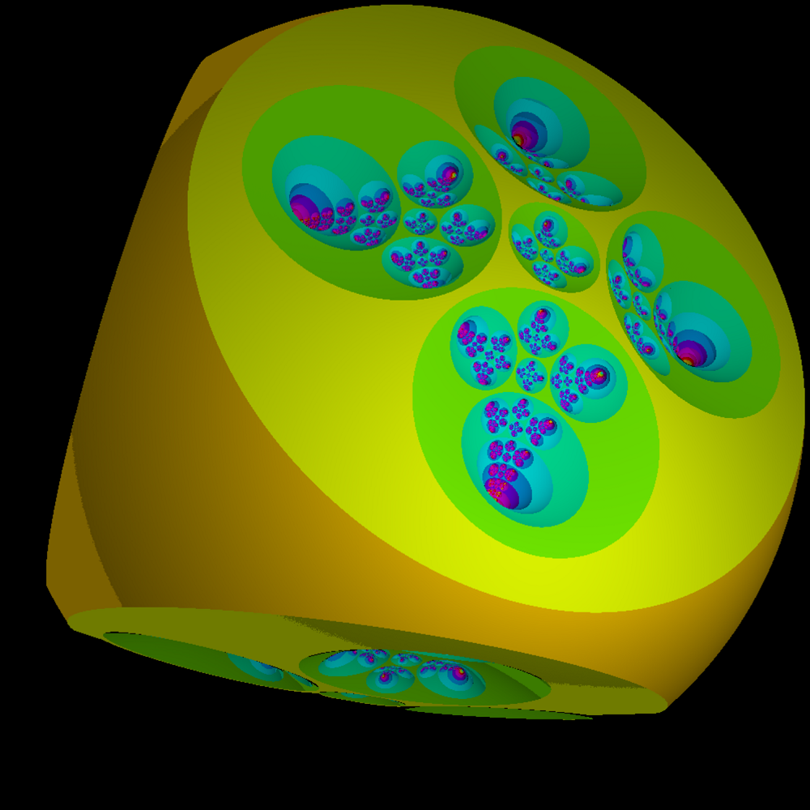
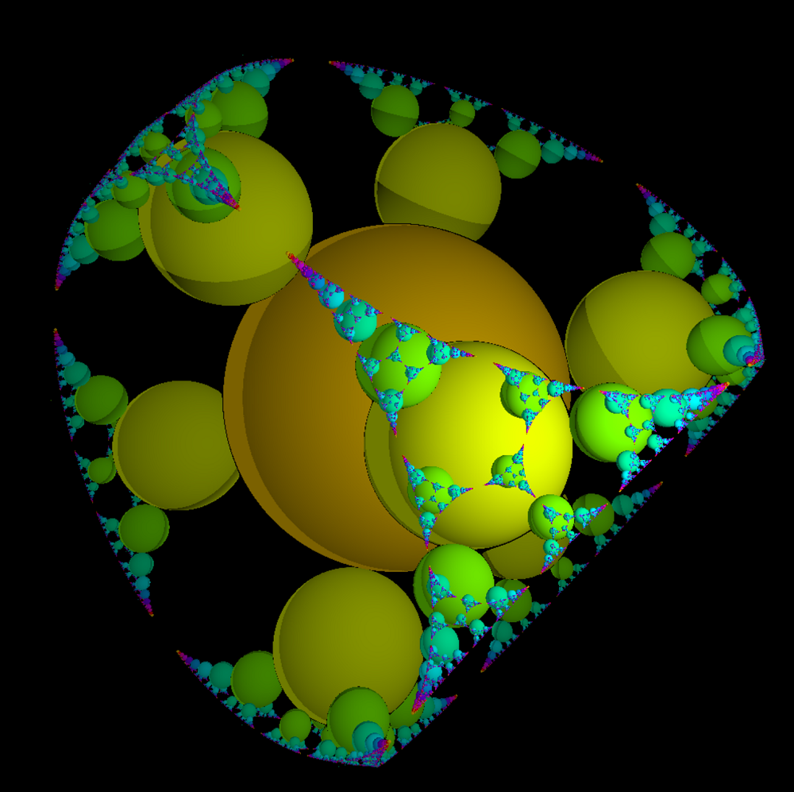
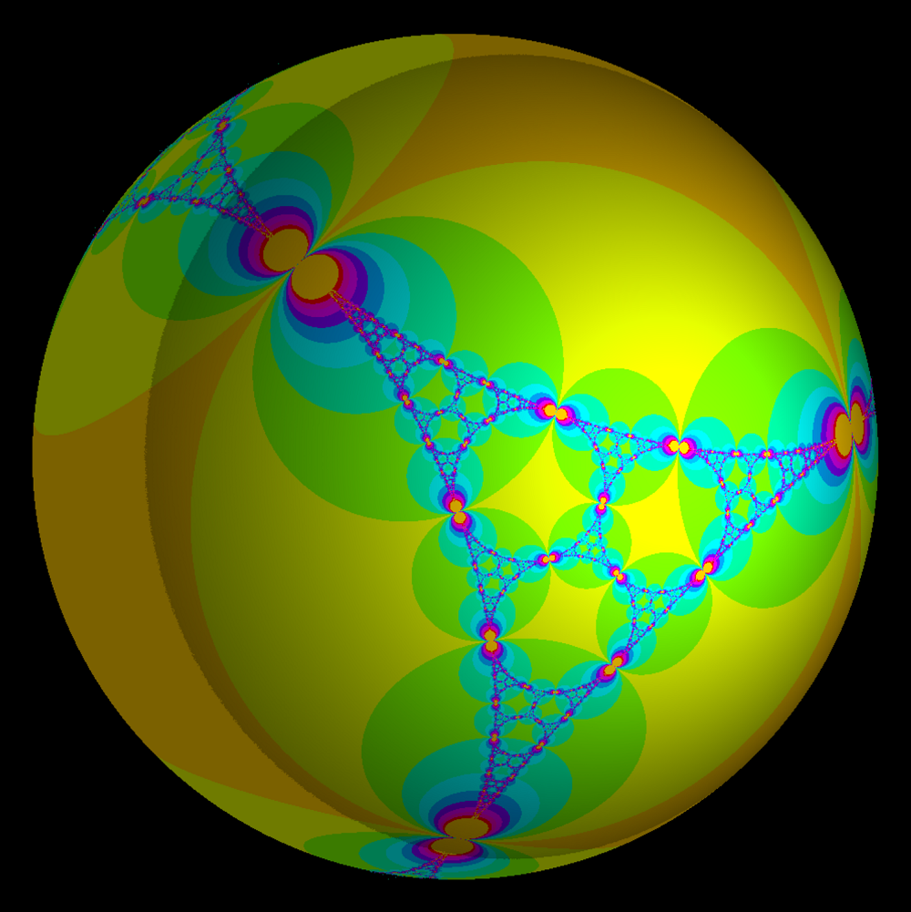
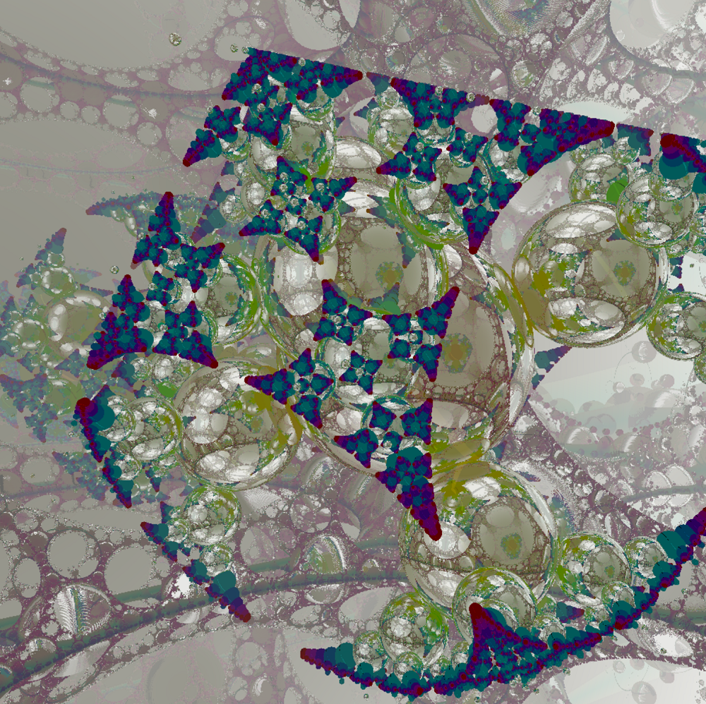

Examples of the algorithm for drawing image of Schottky groups by WebGL and GLSL.
This is called Iterated Inversion System (IIS). It is easy to
parallelize and render images fast. It can be used to render
2-dimensional kissing Schottky groups and also 3-dimensional kissing
Schottky groups.
3D examples may require high GPU power, so run these examples at your own risk.
Similar examples are also available on my Shadertoy page. You can edit and run code easily. Some examples may run faster than running on my WebGL implementation.
This is basic kissing Schottky group composed by four circles.


This pattern is called apollonian packing. There are other algorithms for displaying it. 
Actually, this is not Schottky group because Schottky groups are composed by even number of circles/spheres. However we can use this algorithm if groups are composed by circles/spheres.

This group is composed by 6 Schottky spheres at the position of the vertexes of an octahedron.


Depending on the parameter, we can get such interesting image. 
This group is composed by 8 Schottky spheres at the position of the vertexes of a cube.


Tokyo Demo Fest 2016 GLSL Graphics Compo 2nd Place.
This demo is using this algorithm.

Creative Commons Attribution-ShareAlike 3.0 Unported
MIT